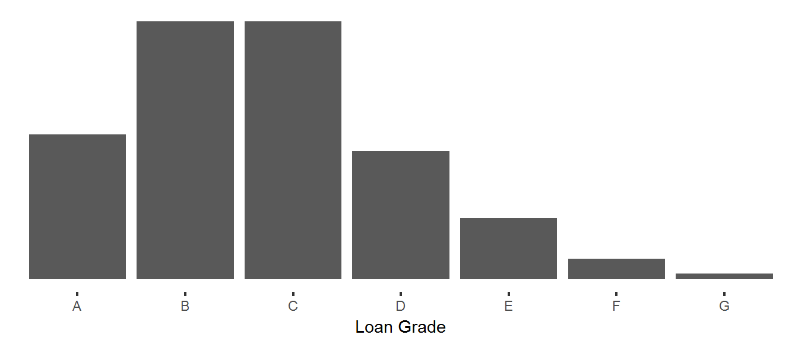

To start off, this analysis makes a few assumptions about how to classify loans.
Current and loans in the grace period are classified as current (A) and all other loans have been classified as defaulted (B). Some of those late loans will be made current it’s not a likely action. Contrarily, some of the loans in the grace period will go into default.
No filters have been applied to the dataset. All loans, including those which not yet matured, are included in the data. While this may be useful for data about originations, it will require consideration when interpreting default rates.
| Grade | Total | Proportion |
|---|---|---|
| A | 251,928 | 0.17 |
| B | 449,142 | 0.29 |
| C | 448,638 | 0.29 |
| D | 222,776 | 0.15 |
| E | 106,417 | 0.07 |
| F | 35,843 | 0.02 |
| G | 9,333 | 0.01 |

There are 1,524,077 loans in the dataset and the median loan grade level is C. We can further describe this distribution using skewness and kurtosis. From the chart we can say that the data is skewed towards the lower loan grades and that the lower grade tail is fatter than the higher grade tail. This is inherently true beacause the max grade is A and you cannot have a tail with values greater than A.
Kurtosis is a description of the shape or peaked-ness of the curve. The kurtosis score for this distribution is 0.1503002. For comparison, the normal distribution has a score of 3.0. We can interpret the comparison to say our issued loan distribution produces fewer and less extreme outliers than the normal distribution. Again, this makes sense intuitively because there are only 7 possible grades. This poses an upper and lower constraint on the loans effectively eliminating extreme outliers.
| Year | Count |
|---|---|
| 2007 | 603 |
| 2008 | 2,393 |
| 2009 | 5,281 |
| 2010 | 12,537 |
| 2011 | 21,721 |
| 2012 | 53,367 |
| 2013 | 134,814 |
| 2014 | 235,629 |
| 2015 | 421,095 |
| 2016 | 434,407 |
| 2017 | 202,230 |
The number of loans issued has grown significantly since 2007. In fact the growth rate from 2007 to 2016 was 26% however growth has leveled off since 2015 to only 3%.
QUESTION: Why has growth slowed in the past year? Does this signal a change in the borrower mix and would that affect default rates?
QUESTION: 2017 Q1 run rate is less than 2016 full year loan count. Is there a seasonal trend to loan issuance?
| grade | 2007 | 2008 | 2009 | 2010 | 2011 | 2012 | 2013 | 2014 | 2015 | 2016 | 2017 |
|---|---|---|---|---|---|---|---|---|---|---|---|
| A | 0.13 | 0.13 | 0.23 | 0.23 | 0.26 | 0.20 | 0.13 | 0.15 | 0.17 | 0.16 | 0.16 |
| B | 0.16 | 0.25 | 0.27 | 0.29 | 0.30 | 0.35 | 0.33 | 0.26 | 0.28 | 0.31 | 0.30 |
| C | 0.23 | 0.24 | 0.26 | 0.22 | 0.18 | 0.22 | 0.28 | 0.28 | 0.29 | 0.30 | 0.35 |
| D | 0.16 | 0.18 | 0.15 | 0.15 | 0.13 | 0.14 | 0.15 | 0.18 | 0.15 | 0.14 | 0.12 |
| E | 0.17 | 0.12 | 0.06 | 0.08 | 0.08 | 0.06 | 0.07 | 0.09 | 0.08 | 0.06 | 0.05 |
| F | 0.09 | 0.05 | 0.02 | 0.02 | 0.03 | 0.02 | 0.03 | 0.03 | 0.02 | 0.02 | 0.02 |
| G | 0.06 | 0.04 | 0.01 | 0.01 | 0.01 | 0.00 | 0.01 | 0.01 | 0.01 | 0.01 | 0.01 |
Grade A loans reached its peak share of the loan distribution in 2011. We can see from the change between 2011 and 2013 that the share had shifted towards the B and C grades.
QUESTION: Is this grade mix due to a change in the scoring model or the applicant pool?
The analysis was based on LendingClubData version 0.1.4.